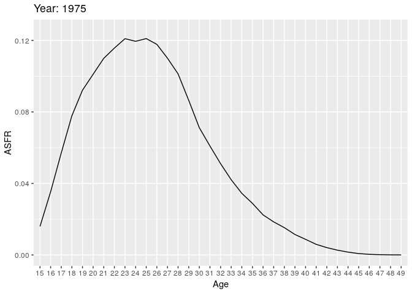
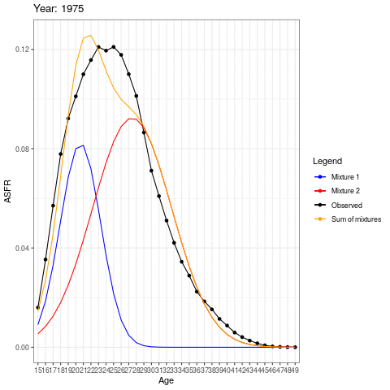
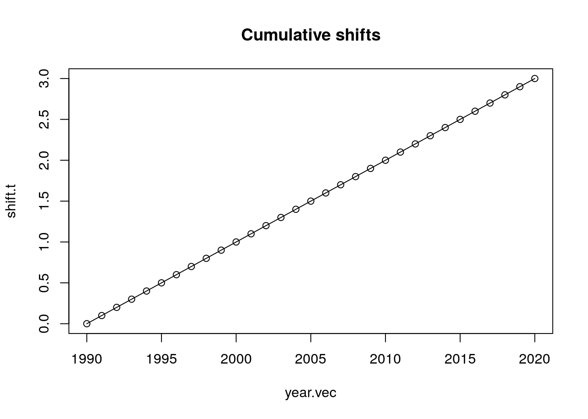

Chapter 7 Fertility Heterogeneity: Tempo Distortions and Distorted Tempo
7.1 Outline
- Introduction and a tempo simulation
- Bongaarts and Feeney’s formula
- An application to the United States
- Two Americas?
- EM algorithm for unmixing mixtures
- An application to two Americas.
Additional resources:
- Sullivan (2005): An early paper (by a Berkeley Demog student!) focusing on first birth hazards.
- Burkimsher (2017): A descriptive paper, which you can mostly skip. But see especially section 7, where she argues that her findings contradict Sullivan for the United States.
- Hastie, Tibshirani, and Friedman (2009): A textbook example of expectation-maximization algorithm applied to mixture of two normals in Section 8.5.
- Victor Lavrenko. Youtube video : “EM algorithm: how it works” https://www.youtube.com/watch?v=REypj2sy_5U.
- Bongaarts and Feeney (1998)
7.2 Introduction
What we see is superficial. Heterogeneous models reveal what’s “really” going on. (Or do they?).
- Until the past sections, population hazards mislead.
- However in this section, homogeneous fertility misleads.
We now reverse perspectives:
- We see differences we see in genotypes, in lineages, in names.
- These could be due to “real” differences (heterogeneity).
- But they could also be due to luck: everyone is the same but stochastic outcomes differ.
- Our models of individual-level randomness will have predicted dynamics, which are themselves interesting but can also be used as a “null” to compare to observations.
7.2.1 Fertility postponement, a very simple example
Baseline
- A population has a history of 1 birth per day
- When women turn age 25, they have a daughter.
- This gives us a constant stream of births, 365 per year.
Postponement
- Starting on Jan. 1, 2020, everyone postpones childbearing an additional month, until they are aged 25 1/12.
- How many births will there be in 2020?
- How many births in 2021?
As everybody postpones childbearing for a month, then the first birth of 2020 occurs on February 1st so that 31 babies have not been born by then.
This means that during 2020 there are \(365-31=334\) births. For this year, births and total fertility rate decrease. However, the postponement doesn’t affect the birth stream in 2021 as there will still be one birth per day, even if in the absence of postponing these some of the births should’ve occured in 2020.
7.2.2 Continuous postponement, a shiny simulation
To answer these questions, we can use the following shiny app.
\(R(t)\) Cumulative postponment
\(r(t)\) Incremental postponement \(r(t) = R'(t)\)
What is a formula for recovering original birth stream? \[\begin{align} \hat{B}_{orig} &= B_{obs} \times (1 + R'(t)) \\ \text{or}\\ \hat{B}_{orig} &= B_{obs} \times 1/ \left[1 - R'(t)\right]? \end{align}\]
Note: this idea of ``recovering original’’ is one way to think about tempo adjustment.
We can think of the original version as that which should have ocurred in the absence of postponement. Intuitively, it should be higher than the observed birth stream, but how much larger? The table below shows an example of how to recover the original births where each formula refers to the equations above.
library(tidyverse)
rt <- seq(0.1,0.4,0.1)
b_obs <- c(91,84, 77, 72 )
b_orig1 <- b_obs*(1+rt)
b_orig2 <- b_obs/(1-rt)
b_orig <- tibble(rt,b_obs, b_orig1, b_orig2)
names(b_orig) <- c("r(t)","B(obs)", "B(orig) formula 1", "B(orig) formula 2")
knitr::kable(b_orig) %>%
kableExtra::kable_styling(full_width = F)| r(t) | B(obs) | B(orig) formula 1 | B(orig) formula 2 |
|---|---|---|---|
| 0.1 | 91 | 100.1 | 101.1111 |
| 0.2 | 84 | 100.8 | 105.0000 |
| 0.3 | 77 | 100.1 | 110.0000 |
| 0.4 | 72 | 100.8 | 120.0000 |
The correct formula is equation 2. NOTE: is this correct? If so, why?
7.3 Period Shifts: Bongaarts and Feeney’s model
In a bigger microsimulation
- Each period will have births across a range of ages
- We’ll randomly generate the original planned birthdays
- Then we’ll shift by a continuous function \(R(t)\).
The birth rate of women, \(f(a,t)\), aged \(a\) in period \(t\) is: \[ f(a,t) = f_0(a - R(t)) (1- R'(t)) q(t) \]
Where
- \(f_0\): constant baseline schedule (can be normalized to sum to 1).
- \(q(t)\): period intensity parameter: “quantum”
- \(R(t)\): cumulative shift.
An example
\[ f(a,t) = f_0(a - R(t)) (1- R'(t)) q(t) \]
- \(R_{2019} = 3\)
- \(R'_{2019} = 0.1\)
- \(q(2019) = 1\)
Give an expression for \(f(28,2019)\)
\[ \begin{aligned} f(28,2019) &= f_{0}(28-3)\times(1-0.1)\times(1) \\ & = (0.9)f_{0}(25) \end{aligned}\]
Therefore, the fertility rate for a 28 year-old in 2019 would be 0.9 of the baseline fertility rate at age 25. Another way of thinking about it is that had there been no postponement, the fertility rate that we are observing in 2019 for this 28 year-old would actually be similar to that of a 25 year old.
Small changes in the stock can have huge effect in the flows.
7.3.1 A derivation: due to Rodriguez NOTE: not sure what the reference is here
Assume no quantum effects (i.e, no \(q(t)\)). Take a cohort with cumulative fertility
\[ F_0(a) = \int_0^a f(x) \,dx \]
Now put in shifts so that observed fertility is from an age \(R(t)\) years earlier. (“28” is the new “25”!) \[ F(a,t) = F_0(a - R(t)) = F_0(a - R(c + a)) \]
Differentiate with respect to age (which for a cohort is also time \(t\)), using chain rule
\[ \begin{aligned} \frac{d }{dt}F(a,t)= f(a,t) &= F'_{0}(a-R(c+a))\times(1-R'(c+a)) \\ &= f_0(a - R(t)) \left[1 - R'(t)\right] \end{aligned}\]
Let’s re-notate our constant quantum result \[ f_0(a,t | R(t) ) = f_0(a - R(t)) \left[1 - R'(t)\right] \] Then we can incorporate period quantum on the shifted surface: \[ f(a,t) = f_0(a,t | R(t) ) q(t) = f_0(a - R(t)) \left[1 - R'(t)\right]q(t) \]
Note: If we vary quantum before shifts, then \(q(t)\) will bleed into neighboring years. (a small effect, but makes model messier). NOTE: I don’t understand this, could you explain Josh?
7.3.2 Tempo-adjusted TFR:
counter-factual
TFR in absence of timing changes
\[ TFR(t) = \int_0^\infty f(a,t) \, da \]
Substituting our shifted birth rates with quantum \[ \begin{aligned} TFR(t) &= \int_0^\infty f_0(a - R(t)) \left[1 - R'(t)\right]q(t) da \\ &=\left[1 - R'(t)\right]q(t) \int_0^\infty f_0(a - R(t)) da \\ &= TFR_0 \left[1 - R'(t)\right] q(t)\\ \end{aligned} \] Without loss of generality, define \(TFR_0 = 1\), then
\[ q(t) = \frac{TFR(t)} {1 - R'(t)} \equiv TFR^*(t) \] The observed \(TFR(t)\) deflated by the rate of change (\(1 - R'(t)\)) is the BF formula.
How do period schedules change?
\[ f(a,t) = f_0(a - R(t)) \left[1 - R'(t)\right]q(t) \]
What is \({\partial \over \partial t} \log f(a,t)\)?
Solving
\[ \begin{aligned} {\partial \over \partial t} \log f(a,t) & = \frac{d}{dt}log(f_{0}(a-R(t))) + \frac{d}{dt}log(1-R'(t)) + \frac{d}{dt}log(q(t)) \\ & = \frac{-f'_{0}(a-R(t)) R'(t)}{f_{0}(a-R(t))} - \frac{R''(t)}{1-R'(t)}+ \frac{q'(t)}{q(t)} \end{aligned} \]
If we sketch this, where the age is on the x-axis, then the last two components affect the intercept of the curve. If births are postponed, \(R'(t)>0\) but if they are actually advanced then \(R'(t)<0\), which affects the slope, \(\frac{\partial}{\partial t}\log f(a,t)\).
Uniform shifts
- BF model assumes all ages shift by \(R(t)\).
- BF model assumes all ages rise or fall by same quantum \(q(t)\)
- Violating these assumptions means change in mean age will not just reflect “tempo”.
- Example: What happens if people have fewer higher order births?
BF recommendation for achieving uniformity
Separate estimates for each birth order, and then combine: \[ TFR^*(t) = \sum_i TFR_i^*(t) = \sum_i {TFR_i(t) \over 1 - r_i(t)} \]
This will protect against order-specific quantum effects.
7.4 An Application to the United States
Tempo adjustment of US fertility using HFD data using Bongaarts-Feeney formula:
1. Read in data and format into an array.
Below we show the period fertility rates for all parities at each age for 1933 and 1934 of US women.
library(data.table)
library(dplyr)
library(knitr)
source("https://raw.githubusercontent.com/josh-goldstein-git/random_demography/master/bookdown-master/codes/tempo_functions.R")
source("https://raw.githubusercontent.com/josh-goldstein-git/random_demography/master/bookdown-master/codes/utility_functions.R")
## age specific fertility rates by birth order for all countries and times
## RR means "rectangles" on Lexis surface
dt <- fread("https://raw.githubusercontent.com/josh-goldstein-git/random_demography/master/bookdown-master/data/zip_w/asfrRRbo.txt", showProgress = FALSE)
dt <- dt[Code == "USA"] ## keep only US
dt <- dt[Age %in% 15:49] ## keep only ages 15 to 49
## put all order fertility into a matrix
fat <- dt[, xtabs(ASFR ~ Age + Year)] # age (rows) by cohort year (column) matrix of ASFR
fat <- as.matrix(unclass(fat))
fat1 <- dt[, xtabs(ASFR1 ~ Age + Year)] #age specific fertility rates for parity = 1
fat2 <- dt[, xtabs(ASFR2 ~ Age + Year)]
fat3 <- dt[, xtabs(ASFR3 ~ Age + Year)]
fat4 <- dt[, xtabs(ASFR4 ~ Age + Year)]
fat5p <- dt[, xtabs(ASFR5p ~ Age + Year)]
year.vec <- colnames(fat)
age.vec <- rownames(fat)
parity.vec <- c("all", 1:5)
fat.array <- array(NA, dim = c(nrow(fat), ncol(fat), length(parity.vec)))
dimnames(fat.array) <- list(age.vec, year.vec, parity.vec)
fat.array[,,"all"] <- fat
fat.array[,,"1"] <- fat1
fat.array[,,"2"] <- fat2
fat.array[,,"3"] <- fat3
fat.array[,,"4"] <- fat4
fat.array[,,"5"] <- fat5p
kable(fat.array[,1:2,"all"], caption="An extract of period age-specific fertility rates")%>%
kableExtra::kable_styling(full_width = F) | 1933 | 1934 | |
|---|---|---|
| 15 | 0.00672 | 0.00715 |
| 16 | 0.01875 | 0.01991 |
| 17 | 0.03846 | 0.04062 |
| 18 | 0.06586 | 0.06957 |
| 19 | 0.08719 | 0.09155 |
| 20 | 0.10136 | 0.10749 |
| 21 | 0.10639 | 0.11296 |
| 22 | 0.11349 | 0.11807 |
| 23 | 0.11785 | 0.12034 |
| 24 | 0.11476 | 0.12208 |
| 25 | 0.11388 | 0.11536 |
| 26 | 0.10873 | 0.11399 |
| 27 | 0.10118 | 0.10487 |
| 28 | 0.10283 | 0.10554 |
| 29 | 0.09094 | 0.09483 |
| 30 | 0.09009 | 0.09330 |
| 31 | 0.06941 | 0.07239 |
| 32 | 0.07813 | 0.07541 |
| 33 | 0.07614 | 0.06993 |
| 34 | 0.06013 | 0.07248 |
| 35 | 0.06009 | 0.05676 |
| 36 | 0.05416 | 0.05401 |
| 37 | 0.04748 | 0.04670 |
| 38 | 0.04755 | 0.04769 |
| 39 | 0.03724 | 0.03752 |
| 40 | 0.03078 | 0.03024 |
| 41 | 0.01967 | 0.01963 |
| 42 | 0.01877 | 0.01874 |
| 43 | 0.01283 | 0.01235 |
| 44 | 0.00808 | 0.00789 |
| 45 | 0.00526 | 0.00491 |
| 46 | 0.00245 | 0.00242 |
| 47 | 0.00127 | 0.00122 |
| 48 | 0.00081 | 0.00087 |
| 49 | 0.00037 | 0.00037 |
2. Fit bongaarts feeney without birth order
tfr.vec <- colSums(fat) # total fertility rate for each cohort
mu.vec <- apply(fat, 2, get.mean) # mean age at childbearing
rt.vec <- center.diff(mu.vec) # increments of postponement
adj.tfr.vec <- tfr.vec / (1 - rt.vec) # Assuming no quantum effect, tempo-adjusted TFRpar(mfrow = c(3,1))
plot(names(mu.vec), mu.vec, xlab = "Year", ylab="Mean age of childbearing")
plot(names(mu.vec), rt.vec, xlab = "Year", ylab= "Shifts")
abline(h =0)
plot(year.vec, tfr.vec, type = "l", xlab = "Year", ylab= "TFR")
lines(year.vec, adj.tfr.vec, lty = 2)
abline(v = c(1945, 2008))
legend("topright", c("Observed TFR", "Tempo-adjusted TFR"), lty= c(1,2))Figure 7.1: Adjusted TFR
- We see fertility since 1980 has been depressed by postponment
- We see weird dynamics around end of WW2 and great recession.
- What’s going on? Here is a closeup
Figure 7.2: Observed and tempo-adjusted TFRs
- Now let’s look at turbulence around WWII
par(mfrow = c(2,2))
plot(age.vec, fat[,"1944"], type = "l", ylim = c(0, .23),
ylab = "f(a)",
xlab = "age a")
lines(age.vec, fat[,"1945"], type = "l", col = "red")
lines(age.vec, fat[,"1946"], type = "l", col = 'orange')
lines(age.vec, fat[,"1947"], type = "l", col = "blue")
legend("topright",
legend = 1944:1947,
col = c("black", "red", "orange", "blue"),
lty = 1)
title("Age specific fertility")
plot(1943:1947, mu.vec[paste(1943:1947)],
ylab = "mu(t)",
xlab = "t",
col = c("black", "black", "red", "orange", "blue"),
pch = 19)
title("Mean ages")
plot(1943:1947, rt.vec[paste(1943:1947)],
ylab = "r(t)",
xlab = "t",
col = c("black", "black", "red", "orange", "blue"),
pch = 19)
title("Changes in mean, centered")
plot(1943:1947, tfr.vec[paste(1943:1947)],
ylab = "tfr",
xlab = "t",
ylim = c(1, 4),
type = "l")
lines(1943:1947, adj.tfr.vec[paste(1943:1947)],
lty = 2)
title("TFR and adjTFR")
legend("topright", c("Observed TFR", "Tempo-adjusted TFR"), lty=c(1,2))Figure 7.3: Change in fertility rates around WWII
- From 1945 to 1946, fertility goes up a lot, but more at younger ages. So mean goes down. BF adjustment over-compensates, and has quantum declining.
What’s happening from 1944-45?
3. Fit bongaarts feeney with birth order
out <- bf.fit(fat.array) #function to obtain BF tempo-adjusted TFR
adj.tfr.bo.vec <- out$tfr.star.out[, "bf.tfr.star"] # sum of parity specific tempo-adjusted TFRspar(mfrow = c(1,1))
plot(year.vec, tfr.vec, type = "l", lwd = 2, xlab="Year", ylab= "TFR")
lines(year.vec, adj.tfr.vec, lty = 2)
lines(year.vec, adj.tfr.bo.vec, lty = 1, lwd = 2, col = "red")
legend("topright",
c("tfr", "tfr* (all parities)", "tfr* (sum of parities)"),
col = c("black", "black", "red"),
lty = c(1, 2, 1),
lwd = c(2,1,2))Figure 7.4: TFR by parities
4. Use HFD data to verify adjusted TFR.
HFD uses a tempo-adjusted TFR that is the sum of the parity specific adjusted BF TFR.
## let's check against hfd
hfd.adj.dt <- fread("https://raw.githubusercontent.com/josh-goldstein-git/random_demography/master/bookdown-master/data/zip_w/adjtfrRR.txt", showProgress = FALSE, skip = 2)
hfd.adj.dt <- hfd.adj.dt[Code == "USA"]We find that:
- Taking birth order into account smooths out WW2 turbulence (large fluctuations) but increases the variation during the Great Recession.
- The baby boom appears to initially be even greater than observed when we take into account birth order, but then it fall more than observed.
- Finally, the baby bust was not as bad as it seemed.
plot(year.vec, tfr.vec, type = "l", lwd = 2, xlab="Year", ylab= "TFR")
lines(year.vec, adj.tfr.vec, lty = 2)
lines(year.vec, adj.tfr.bo.vec, lty = 1, lwd = 2, col = "red")
lines(hfd.adj.dt$Year, hfd.adj.dt$adjTFR, col = "blue")
legend("topright",
c("tfr", "tfr* (all parities)", "tfr* (sum of parities)", "HFD adj TFR"),
col = c("black", "black", "red", "blue"),
lty = c(1, 2, 1, 1),
lwd = c(2,1,2,2))Figure 7.5: TFR by parities using HFD data
7.4.1 Conclusions
- Baby boom smaller if we account for “pre-ponement”.
- Fertility lull in 1970s and 80s disappears if we account for “postponement”.
- Birth order disaggregation improves estimates of shifts from changes in mean age
- What happened with the recession?
7.5 Two Americas
Let’s look at births (all orders). Here we have some animations of the ASFR over time.
my.year.vec <- 1975:2017
# library(devtools)
# install_github("dgrtwo/gganimate")
# install.packages("transformr")
# install.packages("animation")
library(gganimate)
library(data.table)
library(mixtools)
library(ggplot2)
source("https://raw.githubusercontent.com/josh-goldstein-git/random_demography/master/bookdown-master/codes/tempo_mixed_functions.R")
source("https://raw.githubusercontent.com/josh-goldstein-git/random_demography/master/bookdown-master/codes/tempo_functions.R")
# plot1 <- ggplot(data=dt[Year %in% my.year.vec,2:4], aes(x=Age, y= ASFR)) +
# geom_line(aes(group=Year))+
# transition_time(Year)+
# labs(title = "Year: {frame_time}")
# anim_save("plot1.gif", plot1)
During the earlier years, the mean childbearing age seems to be in the early 20s. However with time, the AFR seems to become bimodal. So what is happening here? Are there two underlying groups of women that experience different fertility rates. Now fit mixing model and redo the animation.
NOTE: Not sure of all the lines in this mixture code. Josh, could you add some notes please?
## takes few minutes to run
my.fat <- fat[, paste(my.year.vec)]
out <- get.mixed.tfr.star(my.fat)
##
out.all <- out
#Mixture simulation
if (0) {
mu.mat <- get.coefs.mixed(out.all$fert.fit.list.variable.sigma)$mu.mat
lambda.mat <- get.coefs.mixed(out.all$fert.fit.list.variable.sigma)$lambda.mat
sigma.mat <- get.coefs.mixed(out.all$fert.fit.list.variable.sigma)$sigma.mat
}
mu.mat <- get.coefs.mixed(out.all$fert.fit.list)$mu.mat
lambda.mat <- get.coefs.mixed(out.all$fert.fit.list)$lambda.mat
sigma.mat <- get.coefs.mixed(out.all$fert.fit.list)$sigma.ma
#Temporary comment out until we figure out what these graphs actually are
# matplot(my.year.vec, t(mu.mat))
# abline(v = 2015)## problem here
# points(c(2015, 2015), c(21.5, 30.3))
#
# matplot(my.year.vec, t(lambda.mat))
# abline(v = 2015)## problem here
# points(c(2015, 2015), c(21.5, 30.3))
## interpolate 1915
colnames(lambda.mat) <- my.year.vec
colnames(mu.mat) <- my.year.vec
lambda.mat[,"2015"] <- (lambda.mat[,"2014"] + lambda.mat[,"2016"])/2
mu.mat[,"2015"] <- (mu.mat[,"2014"] + mu.mat[,"2016"])/2Now we create the animation with the normal distributions inside as well as the observed ASFR.
# Obtaining different ASFRs per group (1 and 2)
my.dt <- dt[Year %in% my.year.vec,]
for (i in 1:length(my.year.vec)){
my.year <- my.year.vec[i]
year.vec <- colnames(my.fat)
fx <- my.fat[,paste(my.year)]
# fx <- fx/sum(fx)
x <- as.numeric(names(fx))
## par(mfrow = c(1,1))
# plot(x, fx,
# ylim = c(0, .3),
# ylab = "normalized fx")
s <- year.vec == my.year
this.tfr <- sum(fx)
fx1.hat <- dnorm(x, mean = mu.mat[1,s], sd = sigma.mat[1,s]) *
lambda.mat[1,s]* this.tfr
# lines(x, fx1.hat, col = "red")
fx2.hat <- dnorm(x, mean = mu.mat[2,s], sd = sigma.mat[2,s]) *
lambda.mat[2,s] * this.tfr
# lines(x, fx2.hat, col = "blue")
# lines(x, fx1.hat + fx2.hat)
# title(last.year)
my.dt <- my.dt[Year==my.year, fx := fx]
my.dt <- my.dt[Year==my.year, fx1 := fx1.hat]
my.dt <- my.dt[Year==my.year, fx2 := fx2.hat]
my.dt <- my.dt[Year==my.year, fx1fx2 := fx1.hat + fx2.hat]
}
labels <- c("Observed" = "black", "Mixture 1" = "blue", "Mixture 2" = "red", "Sum of mixtures"="orange")
# plot2 <-
# ggplot(data=my.dt, aes(x=Age)) +
# geom_line(aes( y= ASFR, group=Year, color = "Observed"))+
# geom_line(aes( y= fx1, group=Year, color = "Mixture 1"))+
# geom_line(aes( y= fx2, group=Year, color = "Mixture 2"))+
# geom_line(aes( y= fx1fx2, group=Year, color = "Sum of mixtures"))+
# labs(color = "Legend") +
# scale_color_manual(values = labels)+
# theme_bw()#+
# transition_time(Year)+
# labs(title = "Year: {frame_time}")
# anim_save("plot2.gif", plot2)
The animation shows how the distributions operate under the ASFR curve. There could be two separate normal distributions with distinct mean ages of childbearing.
Let’s do tempo adjustment:
NOTE: Help! I don’t know how to interpret these graphs
rt.mat <- t(apply(mu.mat, 1, center.diff))
tfr.vec <- apply(my.fat, 2, sum)
tfr.mat <- lambda.mat * tfr.vec
par(mfrow = c(1,2))
matplot(my.year.vec, t(tfr.mat), ylim = c(0, 3))
tfr.star.mat <- tfr.mat / (1 - rt.mat)
matplot(my.year.vec, t(tfr.star.mat), ylim = c(0,3))Figure 7.6: Tempo Adjustment
tfr.star.vec <- colSums(tfr.star.mat)
par(mfrow = c(1,1))
plot(my.year.vec, tfr.vec, type = "l",
ylim = c(1, 3))
lines(my.year.vec, tfr.star.vec, lty = 2)
Figure 7.7: Tempo Adjustment
7.5.1 Mixture
Let’s look at 1st births, again as if their are two latent groups: \(A\) and \(B\). (These could be “early moms” / “late moms”, non-college / college, pre-marital / marital, lower-class / upper class, \(\ldots\))
library(mixtools)
## simulate 2 normals
N <- 1000
x1 <- rnorm(N, mean = 22, sd = 3) ##
x2 <- rnorm(2*N, mean = 30, sd = 4)
## combine them
x <- c(x1,x2)
## use EM to infer mixture
out <- normalmixEM(x,
lambda = c(.5, .5),
mu = c(15, 35),
sigma = c(5,5))## number of iterations= 284## [1] 21.82989 29.86819## [1] 2.809958 4.145025## [1] 0.3024403 0.6975597Seems to work great.
ages <- 10:49
dens1 <- dnorm(x = ages, mean = out$mu[1], sd = out$sigma[1]) * out$lambda[1]
dens2 <- dnorm(x = ages, mean = out$mu[2], sd = out$sigma[2]) * out$lambda[2]
par(mfrow = c(1,1))
hist(x, probability = T, col = "grey", main = "", xlab="Ages")
lines(ages, dens1, col = "red", lwd = 2)
lines(ages, dens2, col = "blue", lwd = 2)
lines(ages, dens1 + dens2, col = "black", lwd = 2)
Figure 7.8: Histogram of ages (x)
7.5.2 An algorithm for tempo adjustment of mixtures
Fit normal mixture to each year.
Refit using constant variance (average). This assures shape invariance of each component, fulfilling BF assumption.
Estimate BF separately for \(A\) and \(B\), and combine.
tempo_mixed_results_figure.pdf NOTE: not sure about this…
7.6 Conclusions
- Postponement dilutes period births, lowers TFR
- Tempo-adjustment tries to ``put births back in’’
- Changes in mean work fine if ``shape’’ doesn’t change
- Shape can change through heterogeneity
- With strong assumptions, we can identify heterogeneity
- Declining quantum for young and postponement for old appears to be the story
7.6.1 Caveats
- Who are these latent groups? Do you start out in one and end up in the other? Do you stay in one your whole life?
- How do we project forward?
- Can we use other indicators (e.g., social class, education, marriage) to get same results?
7.7 Questions
- Using the tempo_simu.R file,
- Try with N of 4 million – does it still work? What happens?
- Try with a shift function that goes up and down. Are the adjusted counts ever LESS than the observed counts? If so, when?
- If the cumulative shift was Rt = a + 0.1*t, what would be a formula for tempo-adjusted counts of births? Sketch the 4 panels without the computer and then check to see if you’re right.
- Calculate the age profile of fertility change predicted by the BongaartsFeeney model by taking time derivatives of the log schedules. You will end up with three terms. Describe each of these in words.
- Use simulation based on tempo simu.R to check your answer.
- Is there a diagnostic plot that you could do to compare observed agespecific changes to those predicted by the BF model? Hint: use normalized schedules that sum to 1.0
- Use this diagnostic plot to all-order fertility change during the Great Recession.
- Use this diagnostic plot to 1st, 2nd, and 3rd births.
- Fit the two-part normal mixture model to fertility from another country based on what looks interesting in the Burkimsher paper. (E.g., Canada, Portugal, or the Netherlands). I recommend doing this for 1 year, but once you get your code running, you could iterate over years. Use graphs to discuss the goodness of fit. And if you do more than 1 year, discuss whether the time trends in the parameters make substantive sense)
7.8 Solutions
- Using the tempo_simu.R file,
- Try with N of 4 million – does it still work? What happens? This simulation will first sample from a normal distribution draws of ages that represent the ages of women when giving birth for the first time. It also creates as shift function \(R(t)\) which affects all women of a given year.
library(data.table)
source("functions/utility_functions.R")
source("functions/tempo_functions.R")
million = 10^6
thousand = 10^3
N <- 4 * million
year.vec <- 1990:2020
#######################################
## simulate originally timed births ##
#######################################
## we'll assume normal with age and uniform with time
x <- rnorm(N, mean = 30, sd = 4)
t <- runif(N, min = min(year.vec), max(year.vec)+1)
dt <- data.table(x, t)
#########################
## shifting the births ##
#########################
## we'll assume a continuous S-shaped cumulative shift
shift.t <- 2*plogis(seq(-5, 5, length.out = length(year.vec)))
plot(year.vec, shift.t, type = "o",
main = "Cumulative shifts")
## include shifts as a column
Rt <- approx(x = year.vec, y = shift.t, xout = t)$y
dt[, Rt := approx(x = year.vec, y = shift.t, xout = t)$y]
## calculate shifted times and ages of births
dt[, t.obs := t + Rt]
dt[, x.obs := x + Rt]
## retain only the original time window (for convenience)
dt <- dt[floor(t.obs) %in% year.vec]
##########################################
## observed births counts and mean ages ##
##########################################
out <- dt[, .(Bt = .N, ## count the events
mut = mean(x.obs)), ## get mean age
by = .(year = floor(t.obs))] ## by whole years
out <- out[order(year)]
############################################
## change in mean age and adjusted counts ##
############################################
out[, rt.hat := center.diff(mut, end.fill = T)]
out[, Rt.hat := cumsum(rt.hat)]
out[, Bt.adj := Bt / (1 - rt.hat)]
## function version of tabulating and plotting
tempo_simu_plot_fun <- function(dt)
{
## requires x.obs and t.obs and
## (optionally) t, the original unshifted birth times
##########################################
## observed births counts and mean ages ##
##########################################
out <- dt[, .(Bt = .N, ## count the events
mut = mean(x.obs)), ## get mean age
by = .(year = floor(t.obs))] ## by whole years
out <- out[order(year)]
############################################
## change in mean age and adjusted counts ##
############################################
out[, rt.hat := center.diff(mut, end.fill = T)]
out[, Rt.hat := cumsum(rt.hat)]
out[, Bt.adj := Bt / (1 - rt.hat)]
######################
## plot the results ##
######################
par(mfrow = c(2,2))
out[, plot(year, Bt, ylim = c(.8, 1.2) * range(Bt),
main = "Observed Births")]
out[, plot(year, mut,
main = "Mean age of birth")]
out[, plot(year, center.diff(mut),
main = "Change in mean age of birth")]
## observed, adjusted, and original births
Bt.orig.vec <- dt[, table(floor(t))]
out[, plot(year, Bt, ylim = c(.8, 1.5) * range(Bt),
main = "Observed and Adjusted Births")]
out[, lines(year, Bt.adj, col = "red")]
points(names(Bt.orig.vec), Bt.orig.vec, col = "grey")
legend("top", c("observed", "adjusted", "original"),
pch = c(1,-1,1), lty = c(-1, 1,-1),
col = c("black", "red", "grey"),
bty = "n")
}
tempo_simu_plot_fun(dt)
Yes, it still works. In fact, we see that the adjusted births are very close to the observed births when using this number of simulations. (I continue to use an N of 4 million for the rest of this problem).
b. Try with a shift function that goes up and down. Are the adjusted counts ever LESS than the observed counts? If so, when?
The adjusted counts are not always less than the observed. Naturally, this only happens when we have spikes on the observed counts that become smoother after the adjusting of the birth counts.
c. If the cumulative shift was \(R_t = a + 0.1\times t\), what would be a formula for tempo-adjusted counts of births? Sketch the 4 panels without the computer and then check to see if you’re right.
Let \(a = -199\), so we get a shift of 0 to about 3 years depending on the time period:
x <- rnorm(N, mean = 30, sd = 4)
t <- runif(N, min = min(year.vec), max(year.vec)+1)
dt <- data.table(x, t)
#########################
## shifting the births ##
#########################
#linear shift
alpha = -199
shift.t <- alpha + 0.1*year.vec
plot(year.vec, shift.t, type = "o",
main = "Cumulative shifts")
## include shifts as a column
Rt <- approx(x = year.vec, y = shift.t, xout = t)$y
dt[, Rt := approx(x = year.vec, y = shift.t, xout = t)$y]
## calculate shifted times and ages of births
dt[, t.obs := t + Rt]
dt[, x.obs := x + Rt]
## retain only the original time window (for convenience)
dt <- dt[floor(t.obs) %in% year.vec]
##########################################
## observed births counts and mean ages ##
##########################################
out <- dt[, .(Bt = .N, ## count the events
mut = mean(x.obs)), ## get mean age
by = .(year = floor(t.obs))] ## by whole years
out <- out[order(year)]
############################################
## change in mean age and adjusted counts ##
############################################
out[, rt.hat := center.diff(mut, end.fill = T)]
out[, Rt.hat := cumsum(rt.hat)]
out[, Bt.adj := Bt / (1 - rt.hat)]
## function version of tabulating and plotting
tempo_simu_plot_fun <- function(dt)
{
## requires x.obs and t.obs and
## (optionally) t, the original unshifted birth times
##########################################
## observed births counts and mean ages ##
##########################################
out <- dt[, .(Bt = .N, ## count the events
mut = mean(x.obs)), ## get mean age
by = .(year = floor(t.obs))] ## by whole years
out <- out[order(year)]
############################################
## change in mean age and adjusted counts ##
############################################
out[, rt.hat := center.diff(mut, end.fill = T)]
out[, Rt.hat := cumsum(rt.hat)]
out[, Bt.adj := Bt / (1 - rt.hat)]
######################
## plot the results ##
######################
par(mfrow = c(2,2))
out[, plot(year, Bt, ylim = c(.8, 1.2) * range(Bt),
main = "Observed Births")]
out[, plot(year, mut,
main = "Mean age of birth")]
out[, plot(year, center.diff(mut),
main = "Change in mean age of birth")]
## observed, adjusted, and original births
Bt.orig.vec <- dt[, table(floor(t))]
out[, plot(year, Bt, ylim = c(.8, 1.5) * range(Bt),
main = "Observed and Adjusted Births")]
out[, lines(year, Bt.adj, col = "red")]
points(names(Bt.orig.vec), Bt.orig.vec, col = "grey")
legend("top", c("observed", "adjusted", "original"),
pch = c(1,-1,1), lty = c(-1, 1,-1),
col = c("black", "red", "grey"),
bty = "n")
}
tempo_simu_plot_fun(dt) 2. Calculate the age profile of fertility change predicted by the BongaartsFeeney model by taking time derivatives of the log schedules. You will end up with three terms. Describe each of these in words.
2. Calculate the age profile of fertility change predicted by the BongaartsFeeney model by taking time derivatives of the log schedules. You will end up with three terms. Describe each of these in words.
\[\begin{aligned}
f(a,t)&=f_0(a-R(t))[1-R'(t)]q(t)\\
log(f(a,t))&=log(f_0(a-R(t))) + log(1-R'(t)) + log(q(t))\\
\frac{\partial log(f(a,t))}{\partial t}&=\frac{\partial log(f_0(a-R(t)))}{\partial t} + \frac{\partial
log(1-R'(t))}{\partial t} + \frac{\partial log(q(t))}{\partial t}\\
\frac{\partial log(f(a,t))}{\partial t}&=-R'(t)\frac{f_0'(a-R(t))}{f_0(a-R(t))} -\frac{R''(t)}{1-R'(t)} + \frac{q'(t)}{q(t)}
\end{aligned}\]
The first term represents the proportional change in the fertility of the equivalent pre-postponement cohort. In particular, it is divided into (how far someone shifts ‘over’ relative to ages on the baseline fertility schedule) and an \(R'(t)\) term (how much one shifts ‘up’). The second term represents the proportional change in the rate of change in years of postponement; it is a tempo-effect. The third term represents the proportional change in quantum.
3. Use simulation based on tempo simu.R to check your answer.
The tempo_simu.R function computes \(R(t)\) but we need to obtain the remaining components of the answer from the previous excercise. For simplicity, let’s assume that there are no tempo effects (\(q(t)=0\)) and that \(a=25\), that is, our baseline schedule is that of women aged 25.
a. \(R(t)\) components:
Let’s briefly look at \(R(t)\), \(R'(t)\), and \(R''(t)\). In tempo_simu.R \(R(t)\) refers to the cumulative shift object (shift.t ). We can obtain the derivatives by taking the centered difference of this object.
shift.t.prime <- center.diff(shift.t)
shift.t.prime.2 <- center.diff(shift.t.prime)
par(mfrow = c(2,2))
plot(1991:2020, shift.t, main = 'R(t)', xlab = '', ylab = '')
plot(1991:2020, shift.t.prime, main = 'R\'(t)', xlab = '', ylab = '')
plot(1991:2020, shift.t.prime.2, main = 'R\'\'(t)', xlab = '', ylab = '')
plot(1991:2020,-shift.t.prime.2/ (1-shift.t.prime), main = '-R\'\'(t) / (1- R\'(t))', xlab = 'year', ylab = '')
```
<img src="bookdown-demo_files/figure-html/unnamed-chunk-98-1.png" width="768" />
b. $f_0(a-R(t))$ function:
In the Bongaarts and Feeney model, the baseline schedule of women of age $a$ at time $t$ is $f_0(a-R(t))$. That is, it is the fertility schedule that is observed because of the shift. From the simulation, we obtain a table of births at each age and the age-specific fertility rates. Then, we can look at the original and the observed ASFRs. The original ASFR is that from the simulation, which we would not observe. Rather we would only the see the ASFR from births that were postponed by year-specific shifts.
```r
# floor everything
dt_floored <- dt %>%
transmute('x' = floor(x), 't' = floor(t),
't.obs' = floor(t.obs), 'x.obs' = floor(x.obs)) # the .obs values are the ones that go into the baseline function.
# Births to women born at each age.
original_sched <- table(dt_floored$x, dt_floored$t)
observed_sched <- table(dt_floored$x.obs, dt_floored$t.obs)
# ASFR (The denominator is 100 person years lived, or 100 women at each age)
asfr_original<- original_sched/(100*thousand) #f(a,t)
asfr_observed <- observed_sched/(100*thousand) #f_0(a,t)
#Graph of ASFRs for observed and original births. The lines get lighter with each year.
par(mfrow=c(2,1))
matplot(rownames(asfr_observed), asfr_observed, type = "l", lty = 1, col=grey(seq(0, 1, length = 40)),
xlab = 'Age', ylab = 'ASFR', main = 'Observed ASFR')
abline(v= 25, lty = 2, col = 'black')
matplot(rownames(asfr_original), asfr_original, type = "l", lty = 1, col=grey(seq(0, 1, length = 40)),
xlab = 'Age', ylab = 'ASFR', main = 'Original ASFR')
abline(v= 25, lty = 2, col = 'black')
```
<img src="bookdown-demo_files/figure-html/unnamed-chunk-99-1.png" width="672" />
The component that we are interersted in is the first derivative of the baseline schedule ($f_0(a-R(t))$).
```r
asfr_observed_prime <- apply(asfr_observed, 1, center.diff)
par(mfrow = c(1,3))
matplot(rownames(asfr_observed_prime), asfr_observed_prime, type = "l", lty = 1, col=grey(seq(0, 1, length = 40)),
xlab = 'Year', ylab = 'ASFR', main = "f'0(a-R(t))" )
abline(v= 25, lty = 2, col = 'black')
matplot(rownames(asfr_observed_prime), asfr_observed_prime/t(asfr_observed), type = "l", lty = 1, col=grey(seq(0, 1, length = 40)),
xlab = 'Year', ylab = 'ASFR', main = "f'0(a-R(t))/f0(a-R(t))" )
abline(v= 25, lty = 2, col = 'black')
f <- -shift.t.prime*asfr_observed_prime/t(asfr_observed)
matplot(rownames(asfr_observed_prime),-shift.t.prime*asfr_observed_prime/t(asfr_observed), type = "l", lty = 1, col=grey(seq(0, 1, length = 40)),
xlab = 'Year', ylab = 'ASFR', main = "-R'(t)*f'0(a-R(t))/f0(a-R(t))" )
abline(v= 25, lty = 2, col = 'black')
```
<img src="bookdown-demo_files/figure-html/unnamed-chunk-100-1.png" width="672" />
c. Comparison of terms from original and observed data:
We can merge all the terms of the formula from the previous question and compare it to the derivative of the log version of the observed fertility schedules.
```r
#Observed data (right-hand side)
observed_change <- -shift.t.prime*asfr_observed_prime/t(asfr_observed) - shift.t.prime.2/ (1-shift.t.prime)
#Original data (left-hand side)
original_change <- apply(log(t(asfr_original)),2,center.diff)
#Graphs
par(mfrow = c(1,2))
matplot(rownames(observed_change), observed_change, type = "l", lty = 1, col=grey(seq(0, 1, length = 40)),
xlab = 'Year', ylab = 'ASFR', main = 'Observed change (RHS)')
abline(v= 25, lty = 2, col = 'black')
matplot(rownames(original_change), original_change, type = "l", lty = 1, col=grey(seq(0, 1, length = 40)),
xlab = 'Year', ylab = 'ASFR', main = 'Original change (LHS)')
abline(v= 25, lty = 2, col = 'black')
```
<img src="bookdown-demo_files/figure-html/unnamed-chunk-101-1.png" width="672" />
```r
#There seems to be a lot of noise here, so let's look at the mean at each year for the RHS and the LHS
observed_change_mean <- apply(observed_change, 2, mean, na.rm=TRUE)
original_change_mean <- apply(original_change, 2, mean, na.rm=TRUE)
par(mfrow = c(1,2))
plot(observed_change_mean[12:39], col="blue")
plot(original_change_mean[12:39], col="red")
```
<img src="bookdown-demo_files/figure-html/unnamed-chunk-101-2.png" width="672" />
```r
observed_change_mean
```
```
## 5 6 7 8 9 10
## Inf NaN NaN NaN NaN NaN
## 11 12 13 14 15 16
## 0.0346455819 0.0297976453 0.0248332401 0.0239915297 0.0221809649 0.0199164460
## 17 18 19 20 21 22
## 0.0180659826 0.0160980077 0.0144997811 0.0126420118 0.0107639359 0.0089432668
## 23 24 25 26 27 28
## 0.0069456544 0.0051884417 0.0032663876 0.0014198640 -0.0004753358 -0.0022687715
## 29 30 31 32 33 34
## -0.0041667145 -0.0060392014 -0.0079432768 -0.0096843256 -0.0115976736 -0.0133616444
## 35 36 37 38 39 40
## -0.0153737506 -0.0170545337 -0.0189727392 -0.0208894124 -0.0233746760 -0.0249600394
## 41 42 43 44 45 46
## -0.0265662882 -Inf NaN NaN NaN -Inf
## 47 48
## NaN NaN
```
```r
original_change_mean
```
```
## 5 6 7 8 9 10 11
## NaN NaN NaN -0.04702751 -Inf -Inf -0.04966368
## 12 13 14 15 16 17 18
## -0.06108219 -0.05255181 -0.05463626 -0.05422444 -0.04876114 -0.05049269 -0.05189116
## 19 20 21 22 23 24 25
## -0.05168229 -0.05310568 -0.05152007 -0.05163416 -0.05222859 -0.05216303 -0.05147769
## 26 27 28 29 30 31 32
## -0.05243268 -0.05242616 -0.05138857 -0.05216956 -0.05232595 -0.05271028 -0.05269802
## 33 34 35 36 37 38 39
## -0.05278829 -0.05342713 -0.05158280 -0.05298234 -0.04710160 -0.06555547 -0.06775549
## 40 41 42 43 44 45
## -0.03566782 -0.02772589 NaN NaN NaN NaN
```
```r
observed_change_25 <- -shift.t.prime*asfr_observed_prime[,25]/t(asfr_observed)[,25] - shift.t.prime.2/ (1-shift.t.prime)
original_change_25 <- center.diff(log(t(asfr_original)[,25]))
plot(observed_change_25, col="blue")
lines(original_change_25, col="red")
plot(observed_change[,25], col="blue")
lines(original_change[,25], col="red")
```
<img src="bookdown-demo_files/figure-html/unnamed-chunk-101-3.png" width="672" />
<!--chapter:end:06-tempo.Rmd-->
# Branching Processes
## Outline
- The Galton-Watson-Bienaym\'e Process: Motivation
- Simulating a branching process
- Moment generating functions
- Extinction probabilities
- The distribution of offspring of all generations
- A tractable offspring distribution
Additional resources:
- @grinstead2006: An intermediate/advanced undergraduate textbook with good section on Branching Processes, with references to Harris and Keyfitz below.
- @harris1964theory: Classic reference, but readable if you take your time. We will only read chapter 1 and will only consider the very easiest material.
- Surname Extinction: When will we all be "Smiths"?_ <https://www.youtube.com/watch?v=5p-Jdjo7sSQ>: Popular science video providing good motivation, but without authority.
- _Is Your Surname about to Go Extinct?_ <https://blogs.ancestry.com/cm/is-your-rare-surname-about-to-go-extinct/>:A brief blog entry, mentionng of "endangered names".
- @keyfitz1968: Another introduction to branching process with the details of the empirical example cited by Grinstead and Snell.
- @hellewell2020feasibility: An interesting application to COVID-19
## Motivation
- Until now, we've focused on the hidden structures of heterogeneity.
- Now, we're switching gears:
- Stochastic not deterministic
- In small populations, randomness matters. (Even when risks are homogeneous.)
- We will look at branching processes ("parents producing children"), next Fisher-Wright ("children choosing parents"), and then historical reconstruction from contemporary diversity ("coalescent").
### Very brief history of Branching Processes
- Bienaymé's lost notes
- Old motivation: Galton and Watson's: to see if elites were dying out because of "degeneration"
- Contemporary motivation: evolution and neutral genetic change. What is the chance that a mutant will survive?
- War-time motivation: to see how to build the bomb (chain reactions)
- Sociological: Anywhere "incipient dynamics" matter (will all of S. Korea be "Kim"?)
- Can we get variance of reproductive success from name disambiguation?
- It will give us a headstart on other (less realistic but easier) "drift" models.
### Applicability to the Coronavirus? Yes and no.
- Perhaps the beginning, with first few cases.
- But once scale gets large, we'll see that deterministic dynamics take over.
- One lesson: beyond $R_0$.
### Simulated examples and the questions they raise
Here are the chances, $p_k$, that the first carrier passes on the virus to $k$
people
```r
library(kableExtra)
table <- cbind(c(0,1,2),c(.3,.4,.3))
knitr::kable(
table,
col.names = c('$k$', '$p_k$'))%>%
kableExtra::kable_styling(full_width = F) | \(k\) | \(p_k\) |
|---|---|
| 0 | 0.3 |
| 1 | 0.4 |
| 2 | 0.3 |
What is \(R_0\), (aka \(m\))? This is the expected number of infected cases: \[\begin{aligned} R_{0} & = 0\times 0.3 + 1\times 0.4 + 2\times 0.3 \\ & = 1 \end{aligned}\] NOTE: is this correct?
Now assume that people will infect \(k\) other people based on a random number, for instance the last 4 digits of their phone number.
knitr::kable(
cbind(c(0,1,2),c(.3,.4,.3),c("0-2", "3-5", "6-9")),
col.names = c('$k$', '$p_k$', 'digits')
) %>%
kableExtra::kable_styling(full_width = F)| \(k\) | \(p_k\) | digits |
|---|---|---|
| 0 | 0.3 | 0-2 |
| 1 | 0.4 | 3-5 |
| 2 | 0.3 | 6-9 |
- Let’s diagram one chance outcome, using my number “(xxx) xxx-9056”.
- As each of the four digits is associated with a probability of infecting more people, they can be seen as different the carrier generations.
- For instance, the first carrier has a probability \(p_k=0.3\) of infecting \(k=2\) other people. So that first carrier may infect 2.7 people, (3 for simplicity).
- Each of these three people will have a \(p_k=0.2\) of each infecting \(k=0\) people. Since they don’t infect anybody then there are no further carrier generations.
In the table, we include their rows but the expected number of infected people is still 0 because the spreading stopped in generation 2.
knitr::kable(
cbind(c(1,2,3,4),c(9,0,5,6),c(0.3,0.2,0.4,0.4), c("$2 \\times 0.3 = 2.7$", "$0 \\times 0.3 = 0$", "$0$","$0$")),
col.names = c('carrier generation #', 'random digit', '$p_k$', 'expected # infected'), align="cccl"
) %>%
kableExtra::kable_styling(full_width = F)| carrier generation # | random digit | \(p_k\) | expected # infected |
|---|---|---|---|
| 1 | 9 | 0.3 | \(2 \times 0.3 = 2.7\) |
| 2 | 0 | 0.2 | \(0 \times 0.3 = 0\) |
| 3 | 5 | 0.4 | \(0\) |
| 4 | 6 | 0.4 | \(0\) |
NOTE: does this sound reasonable?
7.8.1 What is a (Bienayme)-Galton-Watson branching process?
- \(p_k\): Each individual in each generation reproduces independently, following same offspring distribution, with \(p_k\) as the probability of having \(k\) offspring.
- \(Z_n\): The si\(Z\)e of the \(n\)’th generation \(Z_n\). (\(Z_1 \equiv 1\))
- \(p_0 > 0\): Some non-zero probability of no children.
- Variance: None of the \(p_k\) are 1

Galton’s original question
Some questions
- What is the chance \(d\) of eventual extinction (no “outbreak”)?
- Or, what is the distribution of surviving family sizes?
- What are the aggregate properties of many branching processes? (Mean growth, variance, time-paths, eventual size)?
7.9 Simulations of parents having children
k = 0:2 #number of possible children
p0 = .3; p1 = .3; p2 = .4;
p_k = c(p0, p1, p2) #probabilities of having k children
Z1 = 1 #initial cohort size
set.seed(9)
kids.of.Z1 = sample(x = k, size = Z1, replace = T, prob = p_k)
Z2 = sum(kids.of.Z1)
kids.of.Z2 = sample(x = k, size = Z2, replace = T, prob = p_k)
Z3 = sum(kids.of.Z2)
kids.of.Z3 = sample(x = k, size = Z3, replace = T, prob = p_k)
Z4 = sum(kids.of.Z3) gen_size <- c(rep(Z1, 1), rep(Z2, Z2), rep(Z3, Z3), rep(Z4, Z4))
gen <- c(rep(1, 1), rep(2, Z2), rep(3, Z3), rep(4, Z4))
person <- c(1, seq(2.1,by=0.1, to=2 + Z2*0.1),
seq(3.1,by=0.1, to=3 +Z3*0.1),
seq(4.1,by=0.1, to=4 +Z4*0.1))
total_children <- c(kids.of.Z1, kids.of.Z2, kids.of.Z3, rep(0, Z4))
library(tidyverse)
growth <- tibble(gen, person, total_children, gen_size)
names(growth) <- c("Generation #", "Person ID", "Total children", "Generation size")
knitr::kable(growth)%>%
kableExtra::kable_styling(full_width = F)| Generation # | Person ID | Total children | Generation size |
|---|---|---|---|
| 1 | 1.0 | 2 | 1 |
| 2 | 2.1 | 2 | 2 |
| 2 | 2.2 | 2 | 2 |
| 3 | 3.1 | 2 | 4 |
| 3 | 3.2 | 1 | 4 |
| 3 | 3.3 | 2 | 4 |
| 3 | 3.4 | 2 | 4 |
| 4 | 4.1 | 0 | 7 |
| 4 | 4.2 | 0 | 7 |
| 4 | 4.3 | 0 | 7 |
| 4 | 4.4 | 0 | 7 |
| 4 | 4.5 | 0 | 7 |
| 4 | 4.6 | 0 | 7 |
| 4 | 4.7 | 0 | 7 |
- Here’s a more visual representation.
# install.packages('DiagrammeR')
DiagrammeR::grViz("
digraph rmarkdown{
1 ->{2.1 2.2}
2.1->{3.1 3.2}
2.2->{3.3 3.4}
3.1->{4.1 4.2}
3.2->{4.3}
3.3->{4.4 4.5}
3.4->{4.6 4.7}
}")Figure 7.9: Parents having childrens
- However, we can extend the number of generations in a function:
#A function
branch <- function(n_max = 30, pk = c(p0, p1, p2), Z1 = 1)
{
Z.vec <- rep(NA, n_max) # n_max handles the total number of generations
Z.vec[1] <- Z1
for (i in 1:(n_max-1))
{
Z.vec[i+1] <- sum(sample(x = k,
size = Z.vec[i],
replace = T,
prob = p_k))
}
return(Z.vec) # returns a vector of the number of children at every generation
}- Sometimes generations die out:
## [1] 1 2 2 4 5 2 2 3 2 0 0 0 0 0 0 0 0 0 0 0 0 0 0 0 0 0 0 0 0 0## [1] 1 1 2 1 1 0 0 0 0 0 0 0 0 0 0 0 0 0 0 0 0 0 0 0 0 0 0 0 0 0- Let’s see what happens with 20 trials (up to 30 generations). Not all generations go extinct here.
n_trials = 20
n_gen = 30
k = 0:2 #number of possible children
p0 = .3; p1 = .3; p2 = .4;
p_k = c(p0, p1, p2) #probabilities of having k children
Z1 = 1 #initial cohort size
Z.mat <- matrix(NA, n_trials, n_gen)
set.seed(131)
for (i in 1:n_trials)
Z.mat[i,] <- branch(n_max = n_gen)Figure 7.10: Generation size
- How many survive (out of 20)? log-scale

Figure 7.11: Generation sizes (log-scale)
surviving = ifelse(Z.mat[,n_gen] == 0, "extinct", "survive")
foo <- prop.table(table(surviving))
print(prop.table(table(surviving)) )## surviving
## extinct survive
## 0.5 0.5- How would you describe the time path of the surviving lines? Let’s extend the number of generations to observe any long-term trends.
n_trials = 20; n_gen = 100
Z.mat <- matrix(NA, n_trials, n_gen)
set.seed(131)
for (i in 1:n_trials)
Z.mat[i,] <- branch(n_max = n_gen)
Figure 7.12: Generation sizes (log-scale) over many generations
- What does this remind you of? (Hint: “Leslie”). (See Harris (1964), Figure 2, Chapter 1)
7.10 The Probability Generating Function: Our mathematical tool
“Extinction” vs “breakout”
- We see that in a super-critical (\(m > 1\)) branching process, if a line can survive a few generations and reach a large enough size, it will grow exponentially.
- What happens if \(m < 1\), if \(m = 1\)? Discuss. \[ h(z) = p_0 + p_1 z + p_2 z^2 + \ldots \]
- The PGF “keeps book” on the probabilities. The chance of \(k\) is the coefficient on \(z^k\).
- \(h(0)= p_{0}\)
- \(h(1)= p_{0} + p_{1}\)
- \(h'(1)= p_{1} + 2p_{2}\)
- \(h(0)= p_{0}\)
- The story of two brothers. A father has two sons. The probability generating function of their children combined is:
\[
h(z)^2 = (p_0 + p_1 z + p_2 z^2) \times (p_0 + p_1 z + p_2 z^2)
\]
- If we multiply it out we get: \[ \begin{aligned} \left[h(z)\right]^2 = & p_0^2 + p_0 p_1 z + p_0 p_2 z^2 +\\ & p_1 z p_0 + p_1^2 z^2 + p_1 p_2 z^3 + \\ & p_2 z^2 p_0 + p_2 z^3 p_1 + p_2^2 z^4 \\ & = p_0^2 + (2p_0 p_1 )z + (2p_0 p_2 + p_1^2)z^2 + (2p_1 p_2)z^3 + p_2^2 z^4 \end{aligned} \]
The coefficients on \(z^0, z^1, \ldots\) tell us the probability that the sons will have \(k=0,1,2,3,4\) sons.
What is the probability generating function for the distribution of grandsons?
- A man has two sons, with probability \(p_2\), so PGF in that case is \(p_2 [h(z)]^2\).
- But let’s sum over all possible numbers of sons. \[ p_0 + p_1 h(z) + p_2 [h(z)]^2 + p_3 [h(z)]^3 + \ldots \]
- This is the cumulative probability of drawing \(k\) children within a generation of size \(Z\)
- Which is? \[ h(h(z)) \]
- Can show PGF for the n’th generation is \[ h(h(h ... \mbox{$n$ \times} h(z))) = h_n(z) \]
- For instance, let’s get \(h_2(z) = h(h(z))\) for \(h(z) = p_0 + p_1 z + p_2 z^2\) \[\begin{aligned} h(h(z)) = & p_0 + p_1 \left[p_0 + p_1 z + p_2 z^2\right] + p_2 \left[p_0 + p_1 z + p_2 z^2\right]^2\\ = & p_0 + p_1 p_0 + p_1^2 z + p_1 p_2 z^2 + p_2p_0^2 + (2p_0 p_1 p_2)z +\\ (2p_0 p_2^2 + p_2p_1^2)z^2 + (2p_1 p_2^2)z^3 + p_2^3 z^4 \end{aligned}\]
7.11 Extinction
Extinction
- “Extinction is forever.”: So, the probability \(d_n\) of extinction by generation \(n\) can never decline over time. (Must it always rise?)
Recursive extinction
- Is non-extinction “forever”?: If \(\lim_{n \rightarrow \infty} = d(\infty) < 1\), then this says there’s a chance \(1 - d(\infty)\) of eternal persistence. We’ll try to figure out more about what this means.
If the probability of a female line going extinct in \(n\) generations is \(d_n\), then this is equivalent to her daughter(s) line(s) going extinct in \(n-1\) generations. With \(p_k\) chance of having \(k\) daughters, we have \[ d_n = p_0 + p_1 d_{n-1} + \mbox{What is next term in series?} \]
What can we do with \[ d_n = h(d_{n-1})? \]
Well, remember that \(d_n\) is non-decreasing, and that it’s maximum can be no greater than \(1.0\). When \(d_n\) reaches it’s limit, say \(d\), we won’t need generational subscripts, \(d\) will be constant, and will obey \[ d = h(d) \]
Thus, an amazing result: the probability of ultimate extinction is when the argument equals the PGF of the argument.
Can \(d = 1\), can \(d < 1\)
- Try \(d = 1\). What happens?
- If we were to find a solution less than 1.0, how would we interpret that?
- Three cases
z = seq(0, 1.6, .01)
pk = c(.3, .0, .7); names(pk) <- 0:2
d <- pk["0"]
for (i in 1:10)
{
d <- pk["0"] + pk["1"]*d + pk["2"]*d^2
}
## super-critical
hz = pk["0"] + pk["1"]*z + pk["2"]*z^2
plot.fun <- function(z, hz)
{
plot(z, hz, type = "l", ylim = c(0,1.6),
ylab = "h(z)",
yaxs = "i", xaxs = "i", axes = F)
axis(1, at = seq(0, 1.5, .5))
axis(2, at = seq(0, 1.5, .5))
abline(0,1, col = "grey")
lines(z, hz)
axis(2, at = pk["0"], labels = "p0",
col.axis = "red", col = "red",
lwd = 1, las = 2)
}
par(mfrow = c(1,3), pty = "s")
plot.fun(z,hz)
points(c(d, 1),c(d, 1))
title("Super-critical (m > 1) \n 2 roots")
## sub-critical
pk = c(.3, .55, .15); names(pk) <- 0:2
hz = pk["0"] + pk["1"]*z + pk["2"]*z^2
plot.fun(z,hz)
title("Sub-critical (m < 1) \n 1 root")
points(1,1)
## critical
pk = c(.3, .4, .3); names(pk) <- 0:2
hz = pk["0"] + pk["1"]*z + pk["2"]*z^2
plot.fun(z, hz)
title("Critical (m = 1), \n 1 root")
points(1,1)Figure 7.13: PGF for a variety of z
We can prove by answering: What is \(h'(1)\)? What is \(h(0)\)? Is \(h''(z) > 0\)?
In the following cobwed diagram (like a staircase), we can see the values of \(h(p_0)\), \(h(h(p_0))\), \(h(h(h(p_0)))\), \(\ldots\)?
- The orange dot is \(h(p_0)\).
- The purple dot is \(h(h(p_0))\).
- The blue dot is \(h(h(h(p_0)))\).
- The points would converge until we reach the intersection between \(h(z)\) and the diagonal.
pk = c(.3, .0, .7); names(pk) <- 0:2
z = seq(0, 1.6, .01)
hz = pk["0"] + pk["1"]*z + pk["2"]*z^2
plot.fun(z,hz)
hzp0 <- pk["0"] + pk["1"]*pk["0"] + pk["2"]*pk["0"]^2
hhzp0 <- pk["0"] + pk["1"]*hzp0 + pk["2"]*hzp0^2
hhhzp0 <- pk["0"] + pk["1"]*hhzp0 + pk["2"]*hhzp0^2
segments(x0=0, y0=pk["0"],x1=pk["0"], y1= pk["0"], col = "orange", lwd=2)#h(p_0)
segments(x0=pk["0"], y0=pk["0"], y1= hzp0, col = "orange", lwd=2)
segments(x0=pk["0"], y0=hzp0,x1=hzp0, y1= hzp0, col = "purple", lwd=2) #h(h(p_0))
segments(x0=hzp0, y0=hzp0, y1= hhzp0, col = "purple", lwd=2)
segments(x0=hzp0, y0=hhzp0,x1=hhzp0, y1= hhzp0, col = "blue", lwd=2)
segments(x0=hhzp0, y0=hhzp0, y1= hhhzp0, col = "blue", lwd=2)
points(x= pk["0"], y =hzp0, pch=19, col="orange") #h(p_0)
points(x= hzp0, y =hhzp0, pch=19, col="purple") #h(h(p_0))
points(x= hhzp0, y =hhhzp0, pch=19, col="blue") #h(h(h(p_0)))Figure 7.14: Cobwed diagram (staircase)
- So how do we actually get \(d\)?
- Take the case where \(p_0 = .3\), \(p_1 = 0\), and \(p_3 = .7\) (the one I just plotted).
- Can do some algebra
- Or we can recursively iterate on the computer.
- Numerical recursion: below we start at the first value of the probability vector and sequentially try exploring values of \(h(z)\) until we find one that doesn’t change as much. We illustrate the case for up to 20 iterations.
- Take the case where \(p_0 = .3\), \(p_1 = 0\), and \(p_3 = .7\) (the one I just plotted).
pk = c(.3, .0, .7); names(pk) <- 0:2 ## our example
d <- pk["0"] # initial value
for (i in 1:20)
{
d <- pk["0"] + pk["1"]*d + pk["2"]*d^2
if (i %in% c(1,2,19,20))
print(paste(i, d))
}## [1] "1 0.363"
## [1] "2 0.3922383"
## [1] "19 0.428565882081349"
## [1] "20 0.428568100698915"Did we get the right value? Apparently, yes! The green lines take as vertical and horizontal values our \(d=0.428568100698915\)
pk = c(.3, .0, .7); names(pk) <- 0:2
z = seq(0, 1.6, .01)
hz = pk["0"] + pk["1"]*z + pk["2"]*z^2
plot.fun(z,hz)
abline(h = d, col = "green")
abline(v = d, col = "green")
Figure 7.15: ??
- Extinction and non-extinction revisited
- If \(m > 1\), there exists \(d\) bigger than 0 and less than unity.
- This means there’s some positive chance of extinction.
- But also some chance of never-extinction. (What form does never-extinction take?)

Figure 7.16: Generation sizes (log-scale) over many generations
Relevance to Corona virus?
7.12 Good and bad set-ups for branching process
Good
Unrestricted growth (frontier, new disease, start of a reaction)
A “null” model for understanding how apparent structure is just random outcomes. Families that die out didn’t have to have low \(NRR\). Just because most new viruses don’t break out, doesn’t mean they aren’t potentially dangerous (\(R_0 >> 1.0\)).
A model that corresponds our mental model of running a generative process forward. (cf. Fisher-Wright)
Bad
When offspring of 1 depends on offspring of other (e.g., brothers inheriting a farm)
When resource constraints slow growth rates (e.g., Malthus: fertility of next gen depends on fertility of last; SIR model in disease spread)
Analysis. PGF is powerful but still we often have to deal with listing all possibilities.
Big populations – law of large numbers means randomness doesn’t matter.
7.13 The distribution of offspring of all generations
- Means of offspring in generation \(n\)
- Is it “meaningful”? It tells you about the average number of offspring but it might be a skewed distributions because of the large number of zeros.
- We’ll show that unconditional mean is the expectation of random sum, which in this case is the expectation of a product. \[ \mathbb{E} Z_n = m^n \]
- What if \(m = 1\)?
- Mean size of surviving lines?
- Total probability is sum of conditional probabilities, times the chance of each condition: \[ \mathbb{E} Z_n = \mathbb{E}( Z_n | Z_n > 0) P(Z_n > 0) + \mathbb{E}( Z_n | Z_n = 0) P(Z_n = 0) \]
- where \(\mathbb{E}( Z_n | Z_n > 0) P(Z_n > 0)\) is the expected size given no extinction and \(\mathbb{E}( Z_n | Z_n = 0) P(Z_n = 0)\) is the expected size given extinction.
- What is mean size of surviving lines? That is, we want to find \(\mathbb{E}( Z_n | Z_n > 0)\)
- Hint 1: \(P(Z_n = 0) = d_n\), So \(P(Z_n > 0) = 1- d_n\)
- Hint 2: \(\mathbb{E} Z_n = m^n\)
Also note that by definition, \(\mathbb{E}( Z_n | Z_n = 0)=0\)
\[ \begin{aligned} \mathbb{E} Z_n = m^n = & \mathbb{E}( Z_n | Z_n > 0) (1- d_n) + (0)d_n\\ m^n = & \mathbb{E}( Z_n | Z_n > 0) (1- d_n)\\ \mathbb{E}( Z_n | Z_n > 0) =&\frac{m^n}{(1- d_n)} \end{aligned} \]
- Let’s check our result using simulation for 1000 trials. Note that for this case \(m= 0\times p_0 + 1\times p_1 + 2\times p_2= 1\), so \(m^n= 1\)
n_trials = 1000; n_gen = 100
p0 = .3; p1 = .4; p2 = .3 ## what is m?
p_k <- c(p0, p1, p2)
k <- 0:(length(p_k)-1)
Z.mat <- matrix(NA, n_trials, n_gen)
set.seed(131)
for (i in 1:n_trials)
Z.mat[i,] <- branch(n_max = n_gen)Figure 7.17: Extinction simulation
Zn_bar = apply(Z.mat, 2, mean) #expected value Z_n (E(Z_n))
n <- 1:ncol(Z.mat)
proportion.zero <- function(x){prop.table(table(x == 0))["TRUE"]}
d_n = apply(Z.mat, 2, proportion.zero) # fraction extinct
Z.mat.na <- Z.mat; Z.mat.na[Z.mat == 0] <- NA
Zn_surv_bar = apply(Z.mat.na, 2, mean, na.rm = T) #expected value of survivors (E(Z_n|Z_n>0))Using the means for all 1000 simulations, we calculate \(\mathbb{E} Z_n\) (left plot), \(d_n\) (center plot) and \(\mathbb{E}( Z_n | Z_n > 0)\).
par(mfrow = c(1,3))
plot(n, Zn_bar, main = "Mean Zn")
plot(n, d_n, main = "Fraction extinct")
plot(n, Zn_surv_bar, main= "Mean Zn given Zn>0") Figure 7.18: Extinction simulations
7.13.1 Proving \(\mathbb{E} Z_n = m^n\)
- Ingredients
- \(h(z)=p_{0}+p_{1}z+ p_{2} z^2+ \ldots\)
- \(h'(z)=p_{1}+ 2zp_{2} + \ldots\)
- Specifically, when \(z=1\):
- \(h(1)= 1\)
- \(h'(1) =(1)p_1+ (2)p_2+(3)p_3+\ldots= \sum_1^k k p_k = m = \bar{Z}\)
- \(h_n'(1) = m_n = \bar{Z}_n\)
- \(h_{n+1}(z) = h(h_n(z))\)
- Derivation: Take derivative of \(h_{n+1}(z)\) \[ \begin{aligned} h'_{n+1}(z)&= h'_n(h(z)) h'(z) \\ h'_{n+1}(1)&= h'_n(h(1)) h'(1) \\ &= h'_n(1) m \\ &= \bar{Z}_n m \end{aligned} \] NOTE: Can’t find the complete derivation. Help!
7.13.2 Variance result.
- We proved that \(\mathbb{E} Z_n = m^n\) using recursion. For the variance, one can also do recursion but this time we start by taking the second derivative of \(h(z)\)
For \(m = 1\), \[ \sigma_n^2 = n \sigma^2 \]
Also a result for \(m\neq 1\)
What does increasing variance mean for critical case? (Does this make sense?)
What happens to variance of lines that survive? Is it bigger or smaller than unconditional variance?
Variance in our simulation increases with generation number:
Figure 7.19: Distribution of \(Z_n\)
Z20 <- table(table(Z.mat[,20]))
Z5 <- table(table(Z.mat[,5]))
par(mfrow = c(2,2))
plot(Z20[Z20 < 100])
plot(log(Z20[Z20 < 100]))
plot(Z5[Z5 < 100])
plot(log(Z5[Z5 < 100]))
Figure 7.20: Histogram of selected \(Z_n\)
7.14 Geometric offspring distribution
For \(k = 1, 2, \ldots\), \[ p_k = b c^{k-1} \]
For \(k = 0\), \[ p_0 = 1 - p_1 - p_2 - \ldots . \]
Let’s solve for \(p_0\), using the geometric series sum, for \(a < 1\),
\[
1 + a + a^2 + \ldots =
1 / (1-a)
\]
\[
\begin{aligned}
p_0 &= 1 - (p_1 + p_2 + p_3 +\ldots) \\
&= 1 - (bc^{0}+ bc^{1} +b c^{2} + \ldots) \\
&= 1 - (b+ bc^{1} +b c^{2} + \ldots) \\
&= 1 - b(1+ c^{1} + c^{2} + \ldots) \\
&= 1- \frac{b}{1-c} \\
\end{aligned}
\]
So, now we have all \(p_k\) used as inputs for \(h(z)\) given value for \(b\) and \(c\).
A picture, Lotka’s parameters for 1920. The graph shows the probability of having exactly \(k\) number of girls. When \(k=0\) then all children were boys.
b = 0.2126 ; c = 0.5893
kk = 1:10 ; p_kk = b * c^(kk-1)
p0 = b/(1-c)
k = c(0, kk) ; p_k = c(p0, p_kk)Figure 7.21: probability of having exactly \(k\) number of girls
Realism? See Table 10.3, p 386, (“Introduction to Probability” 2006)
7.14.1 The Geometric Distribution’s simple PGF
\[ h(z) = p_0 + p_1 z + p_2 z^2 + \ldots \] With geometric \(p_k\) \[ h(z) = p_0 + \sum_{k= 1}^\infty b c^{k-1} z^k. \] Substituting for \(p_0\) and rewriting \[ h(z) = \left( 1 - \frac{b}{(1-c)}\right) + bz \sum_{k= 1}^\infty (cz)^{k-1}. \] Substituting \(j = k-1\), \[ h(z) = \left( 1 - \frac{b}{(1-c)}\right) + bz \sum_{j= 0}^\infty (cz)^{j} = \left( 1 - \frac{b}{(1-c)}\right) + {bz \over (1 - cz)} \]
The PGF is now “tractable”
- \(m\) and extinction
\[
h(z) = \left( 1 - {b / 1-c}\right) + {bz \over 1 - cz}
\]
- Please solve for \(m\). (Hint: \(h'(1)\)).
- We kmow that \(h'(1)=m\), so we start off taking the first derivative of \(h(z)\) given the tractable form. \[ \begin{aligned} h'(z) &= \frac{bz(-c)-(1-cz)b}{(1-cz)^2}\\ &= \frac{-1}{(1-cz)^2}\\ h'(1) &= \frac{-1}{(1-c)^2} = m\\ \end{aligned} \]
- What is \(m\) with Lotka’s \(b\) and \(c\)? \[ m= \frac{-1}{(1-0.5893)^2}= 5.928579 \] NOTE: does this look reasonable?
- Please solve for \(m\). (Hint: \(h'(1)\)).
- We solve \(z = h(z)\) with a bunch of algebra to get \[ d = {1 - b - c \over c(1-c)} \]
- How does \(d\) depend on \(b\) and \(c\)? \(d\) decreases with \(b\) at a rate of \(\frac{-1}{c(1-c)}\) and changes at rate \(\frac{-(1-b)(1-2c)-c^2}{c^2(1-c)^2}\).
Big payoff: the full distribution of \(Z_n\) (See (“Introduction to Probability” 2006) p. 385)
7.14.2 A plot of Keyfitz’s numbers for generations 1, 2, and 3. Is it exponential for \(k > 0\)?
## b = 0.2126 ; c = 0.5893 ## lotka
b = 0.3666; c = .5533 ## Keyfitz (from GS)
m = b / (1-c)^2 ## [1] 1.260416
d = (1 - b - c) / (c * (1-c)) #[1] 0.8185088
par(mfrow = c(1,2))
for (i in 1:3)
{
n = i
p0_n = d * (m^n - 1)/ (m^n -d)
j = kk
pj_n = m^n *
((1-d) / (m^n - d))^2 *
((m^n - 1)/(m^n - d))^(j-1)
pk_n <- c(p0_n, pj_n)
if (i == 1)
plot(k, pk_n, type = "l", log = "", main="Absolute")
if (i > 1)
lines(k, pk_n, col = i)
}
for (i in 1:3)
{
n = i
p0_n = d * (m^n - 1)/ (m^n -d)
j = kk
pj_n = m^n * ((1-d) / (m^n - d))^2 * ((m^n - 1)/(m^n - d))^(j-1)
pk_n <- c(p0_n, pj_n)
if (i == 1)
plot(k, pk_n, type = "l", log = "y", main="Log scaled")
if (i > 1)
lines(k, pk_n, col = i)
}Figure 7.22: Keyfitz’s plot for generations 1, 2, and 3
Applications
We have exponential distribution with a few very large lines, and a lot of small lines.
- Distribution of neutral alleles
- Distribution of family lines (Y-chromosome, mtDNA, last names)
Our result With geometric \(p_k\), we get geometric \(Z_n\), for all \(n\).
Conjecture: geometric is to BP as gamma is to frailty?
7.15 Branching Processes and Covid-19
- What is the BP that they are studying? Is it contagion, social contacts, or ?
- What do they assume about the BP?
- Do they use any analytical results or just simulation? Why?
- Best feature of paper?
- Worst feature of paper?
- Inspire any other approaches?
7.16 Problems
For the following problems, let \(p_0 = 0.3\), \(p_1=0.3\), \(p_2=0.4\). Use the function \(h(z) = p_0 + p_1 z + p_2 z^2\). This gives \(m= 0.3(0) + 0.3(1) + 0.4(2) = 1.1\), which is supercritical.
- Multiply out \(h(z)^3\) algebraically and explain how the coefficient on \(z^4\) consists of all of the possible ways for 3 fathers to produce a total of 4 sons
- Multiply out \(h_2(z) = h(h(z))\) algebraically and explain how the coefficient on \(z^2\) consists of all of the possible ways for a woman to have 2 grand-daughters.
- Write an R-program to reproduce 20 entries of the table (This is for our values of \(p_0 = 0.3\), \(p_1=0.3\), \(p_2=0.4\), not the \(p_k\) values on wikipedia)
- Use the quadratic formula to solve for \(d\), the probability of ultimate extinction: \(d = p_0 + p_1d + p_2d^2\). What do you get for \(d\) given our \(p_k\) values above? Does it correspond to the same value one gets by using iteration, as in the Wikipedia table?
- Simulate a critical branching process such that m = 1 by reversing the \(p_1\) and \(p_2\) values we’re using. Check that \(m = 1\). You can use the “branch()” code in the slides.
- See if you can do a big number of trials, 1000? For many generations, 30, 50, 100?
- What fraction of lines become extinct?
- What is the distribution of surviving lines? (Hint: Choose a time that is is not so distant that few lines survive)
- What is the mean and variance of of \(Z_{10}\), \(Z_{20}\) and \(Z_{30}\)? What will happen as \(n \to \infty\)?
- See if you can do a big number of trials, 1000? For many generations, 30, 50, 100?
7.17 Solutions
For the following problems, let \(p_0 = 0.3\), \(p_1=0.3\), \(p_2=0.4\). Use the function \(h(z) = p_0 + p_1 z + p_2 z^2\). This gives \(m= 0.3(0) + 0.3(1) + 0.4(2) = 1.1\), which is supercritical.
1. Multiply out \(h(z)^3\) algebraically and explain how the coefficient on \(z^4\) consists of all of the possible ways for 3 fathers to produce a total of 4 sons
Finding \(h(z)^2\):
\[\begin{aligned}
h(z)^2 &= (p_0 + p_1 z + p_2 z^2)\times(p_0 + p_1 z + p_2 z^2) \\
&= p_0^2+2p_0p_1z+(2p_0p_2+p_1^2)z^2 + 2p_1p_2z^3 + p_2^2z^4
\end{aligned}\]
Multiplying out again:
\[\begin{aligned}
h(z)^3 &= h(z)^2 h(z) \\
&= [p_0^2+2p_0p_1z+(2p_0p_2+p_1^2)z^2 + 2p_1p_2z^3 + p_2^2z^4]\times(p_0 + p_1 z + p_2 z^2) \\
&= p_0^3 + (3p_0^2p_1)z + (3p_0^2p_2 + 3p_0p_1^2)z^2 +(6p_0p_1p_2+p_1^3)z^3 + \\
& (3p_0p_2^2+3p_1^2p_2)z^4+ (3p_1p_2^2)z^5 + (p_2^3)z^6\\
\end{aligned}\]
To get a total of 4 children, either two of the fathers have 2 sons each and the third has no sons (\(p_0p_2^2\)), or one of the fathers has 2 sons and the others each have 1 son (\(p_1^2p_2\)). With three fathers, there are 3 ways for each of these combinations to appear; corresponding to the \(3p_0p_2^2+3p_1^2p_2\) coefficient on \(z^4\).
2. Multiply out \(h_2(z) = h(h(z))\) algebraically and explain how the coefficient on \(z^2\) consists of all of the possible ways for a woman to have 2 grand-daughters.
\[\begin{aligned}
h(h(z)) & = p_0+p_1h(z)+p_2h(z)^2 \\
& = p_0 +p_1[p_0 + p_1 z + p_2 z^2] + p_2[p_0^2+2p_0p_1z+(2p_0p_2+p_1^2)z^2 + 2p_1p_2z^3 + p_2^2z^4] \\
&= [p_0+p_0p_1+p_0^2p_2] + [2p_0p_1p_2+p_1^2]z +\\
& [2p_0p_2^2+p_1p_2+p_1^2p_2]z^2 + [2p_1p_2^2]z^3+[p_2^3]z^4
\end{aligned}\]
Here are the ways a woman can end up with 2 granddaughters: first, she can have a single daughter who herself has 2 daughters (\(p_1p_2\)). Or, she can have 2 daughters who then each have 1 daughter (\(p_1^2 p_2\)). Lastly, she can have 2 daughters, one of which has 2 daughters and one who has no daughters (\(2p_0 p_2^2\); note there are two ways for this to happen because there are two daughters in the second generation). These possibilities correspond to the \(2p_0p_2^2+p_1p_2+p_1^2p_2\) coefficient on \(z^2\)
3. Write an R-program to reproduce 20 entries of the table (This is for our values of \(p_0 = 0.3\), \(p_1=0.3\), \(p_2=0.4\), not the \(p_k\) values on wikipedia)
| Generation Number | Extinction probability | Generation Number | Extinction probability |
|---|---|---|---|
| 1 | 0.30000 | 11 | 0.68599 |
| 2 | 0.42600 | 12 | 0.69403 |
| 3 | 0.50039 | 13 | 0.70088 |
| 4 | 0.55027 | 14 | 0.70676 |
| 5 | 0.58620 | 15 | 0.71183 |
| 6 | 0.61331 | 16 | 0.71623 |
| 7 | 0.63446 | 17 | 0.72006 |
| 8 | 0.65135 | 18 | 0.72342 |
| 9 | 0.66511 | 19 | 0.72636 |
| 10 | 0.67648 | 20 | 0.72895 |
| — | — | — | — |
The extinction probability is converging to 0.75 (going out to 50 or 60 generations is helpful for observing this).
Sample code:
d_zero <- 0
p_zero <- 0.3
p_one <- 0.3
p_two <- 0.4
n_gen <- 20
value_table <- matrix(0, nrow = n_gen, ncol = 2)
d_prev <- d_zero
for (i in 1:n_gen) {
prob_extinction <- p_zero + d_prev*p_one + (d_prev^2)*p_two
value_table[i,1] = i
value_table[i, 2] = prob_extinction
d_prev <- prob_extinction
}- Use the quadratic formula to solve for \(d\), the probability of ultimate extinction: \(d = p_0 + p_1d + p_2d^2\). What do you get for \(d\) given our \(p_k\) values above? Does it correspond to the same value one gets by using iteration, as in the Wikipedia table?
Do some rearranging of \(d = p_0 + p_1d + p_2d^2\) to get: \[0 = p_2d^2 +(p_1-1)d + p_0 \]
Solving with the quadratic formula: \[ d^* = {(1-p_1) \pm \sqrt{(p_1-1)^2 - 4p_2p_0} \over 2p_2 } \] Filling in our given \(p_k\) values: \[\begin{aligned} d^* &= \frac{(1-0.3) \pm \sqrt{(0.3-1)^2 -4(0.4)(0.3)}}{2(0.4)} \\ &= \{0.75, 1\} \end{aligned}\]
Since \(m>1\), there are two roots: 1 and 0.75. \(d=0.75\) is the solution we are interested in, and it indeed agrees with the probability of the extinction that our iterative solution converges to. - Simulate a critical branching process such that m = 1 by reversing the \(p_1\) and \(p_2\) values we’re using. Check that \(m = 1\). You can use the “branch()” code in the slides.
Let \(p_0=0.3\), \(p_1 =0.4\), \(p_2=0.3:\)m = 0(0.3) + 1(0.4)+2(0.3) = 1$.- See if you can do a big number of trials, 1000? For many generations, 30, 50, 100?
Sample simulation with 1000 trials for 100 generations (seed set to 91):
Figure 7.23: Branch simulation
- What fraction of lines become extinct?
96.6% of lines become extinct by generation 100 with the above simulation. The following plot shows extinction at each generation:
Figure 7.24: Rate of extinction
- What is the distribution of surviving lines? (Hint: Choose a time that is is not so distant that few lines survive)
The following histograms show surviving lines’ sizes at select generations. At each generation, we can see something resembling a geometric distribution.
Figure 7.25: Surviving generations
- What is the mean and variance of of \(Z_{10}\), \(Z_{20}\) and \(Z_{30}\)? What will happen as \(n \to \infty\)?
- See if you can do a big number of trials, 1000? For many generations, 30, 50, 100?
| Generation \(n\) | Mean \(Z_n\) | Var \(Z_n\) |
|---|---|---|
| 10 | 1.009 | 5.20001 |
| 20 | 1.012 | 10.7426 |
| 30 | 0.991 | 17.53045 |
<div class="figure">
<img src="/hdir/0/andreamg/Year2_2019_2020/Random_demography/random_demography/bookdown-master/figures/meanvar.png" alt="Survival mean and variance" width="100%" />
<p class="caption">(\#fig:unnamed-chunk-135)Survival mean and variance</p>
</div>
The mean and variance calculated above account for all lines, not just surviving ones. In this simulation, the mean tends to hover around 1 and the variance tends to increase with generation number, at least up to a certain point.As \(n\to \infty\), the mean and variance theoretically will go to zero (since \(m=1\) is critical, all lines must eventually die out).
References
Bongaarts, John, and Griffith Feeney. 1998. “On the Quantum and Tempo of Fertility.” Population and Development Review, 271–91.
Burkimsher, Marion. 2017. “Evolution of the Shape of the Fertility Curve: Why Might Some Countries Develop a Bimodal Curve?” Demographic Research 37: 295–324.
Harris, Theodore Edward. 1964. “The Theory of Branching Process.” https://www.rand.org/content/dam/rand/pubs/reports/ 2009/R381.pdf.
Hastie, Trevor, Robert Tibshirani, and Jerome Friedman. 2009. The Elements of Statistical Learning: Data Mining, Inference, and Prediction. Springer Science & Business Media.
“Introduction to Probability.” 2006. https://math.dartmouth.edu/~prob/prob/prob.pdf.
Sullivan, Rachel. 2005. “The Age Pattern of First-Birth Rates Among Us Women: The Bimodal 1990s.” Demography 42 (2): 259–73.